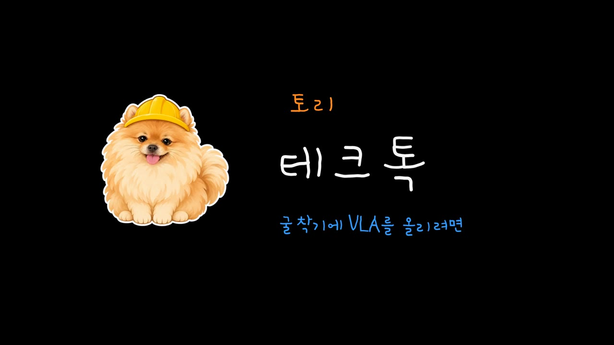
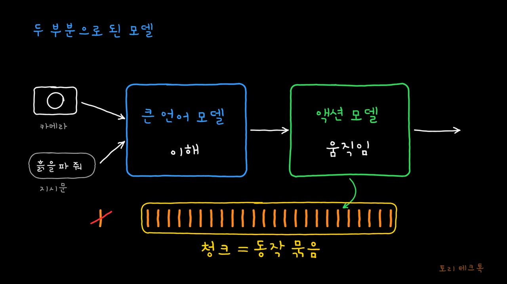
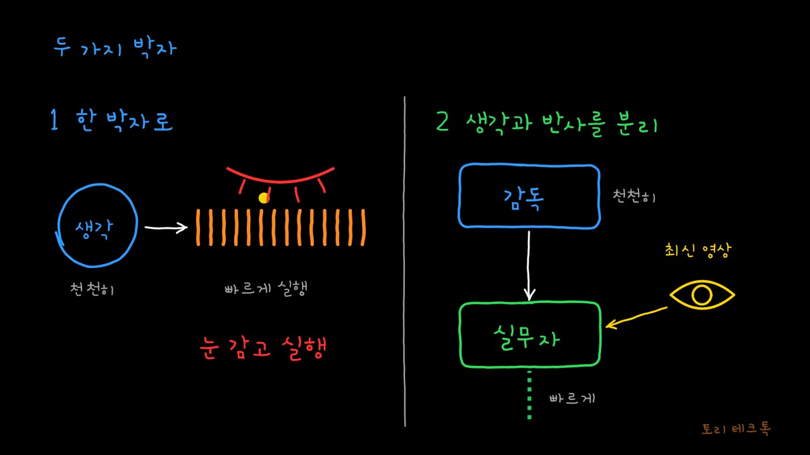
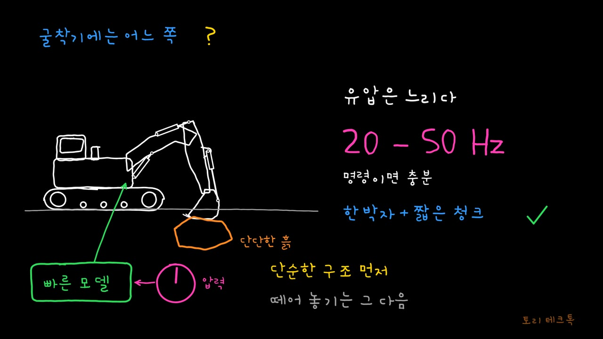
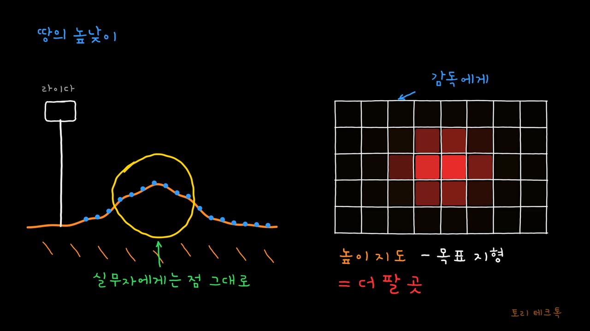
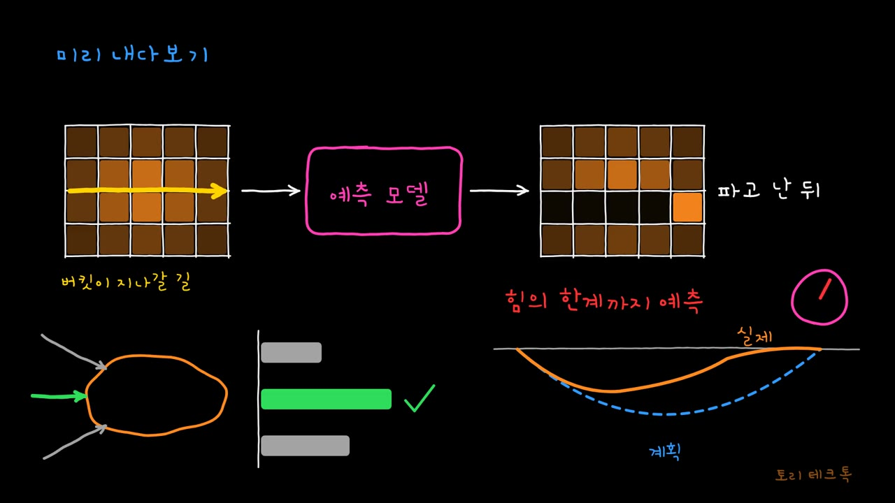

01계보쓸 수 있는 모델 · 세 단계의 변화
02구조한 박자와 분리 · GR00T와 π0
03굴착기동기식 먼저 · 지형 정보 넣기
04필드로봇본체 하나 · 장비별 모듈
05데이터월드 모델 · 영상에서 행동
계보와 구조를 짚고, 굴착기와 필드로봇에 어떻게 맞출지 정리
2026.11.14





GR00T N1.7
NVIDIA, Hugging Face 블로그 (2026.4) · github.com/NVIDIA/Isaac-GR00T
Helix
Figure AI 발표 글 · S2 7B 7~9 Hz, S1 80M 200 Hz
RoboDual
Bu et al., arXiv 2410.08001 · 15 Hz vs OpenVLA 3.9 Hz
X-VLA
arXiv 2510.10274 (ICLR 2026) · Florence-Large 기반 0.9B
Gemini Robotics 2
Google DeepMind (2026.7.30) · ER 2만 공개
DigNet
Duan & Yang, SSRN 6662199 (2026)
WAM
Zhang et al., arXiv 2609.15382 (2026.9)
Size Doesn't Matter
MPM 입자 시뮬레이션 RL · 11.5톤 굴착기와 탁상 로봇
DiT
조건 주입 방식 비교(토큰·크로스 어텐션·adaLN)
RT-X
Open X-Embodiment · 여러 로봇 데이터 공동 학습